Research Hacker
调研黑客
掌握调研的关键附着节点，构建你的超级武器库

关键附着节点
识别调研过程中最关键的决策点和信息节点，提高调研效率。

超级武器库
系统整理的调研工具和方法集合，快速获取高质量信息。
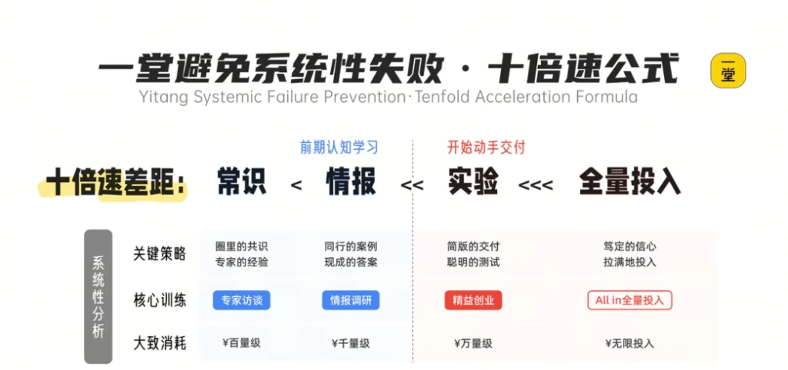
避免系统性失败的核心方法
通过十倍速公式，快速识别可能导致调研失败的致命问题，在调研初期就规避风险，让你的调研效率提升10倍。
8种不同场景的调研方法，覆盖主要业务场景
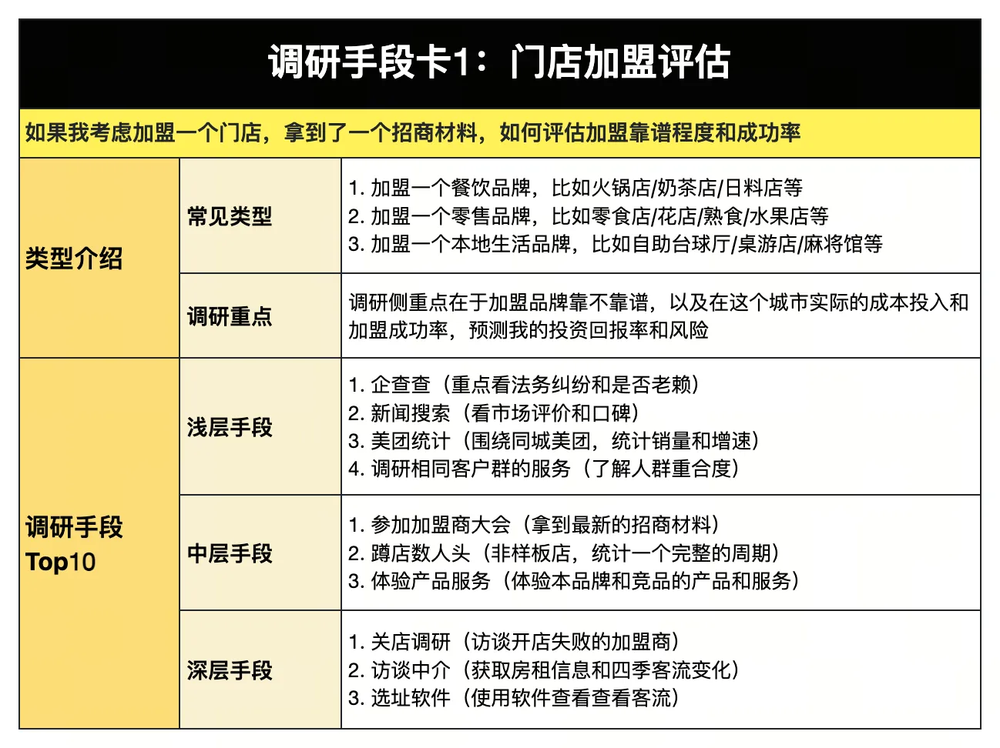
加盟机会评估
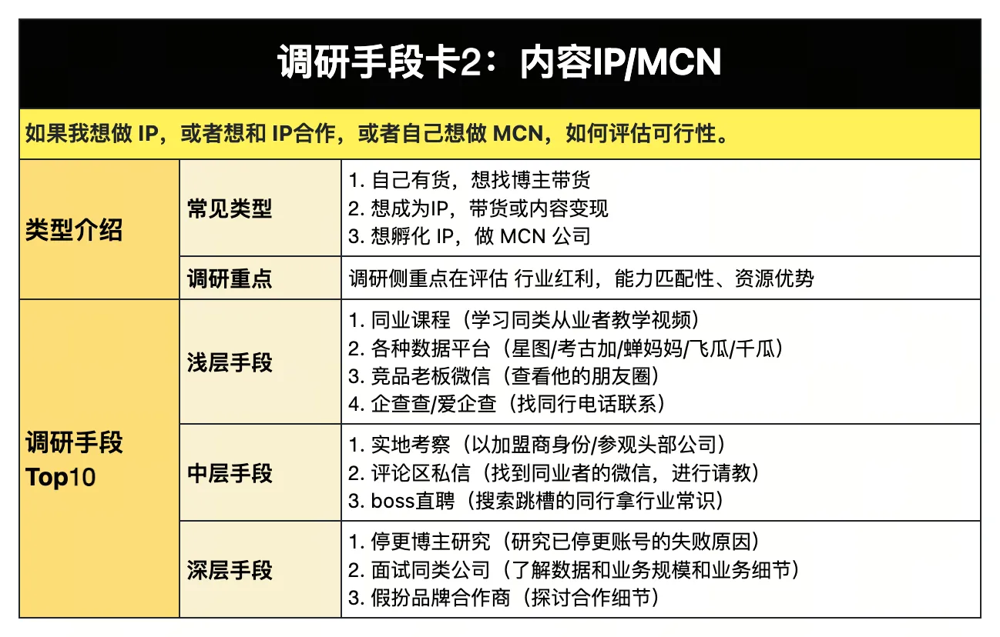
内容创作者评估
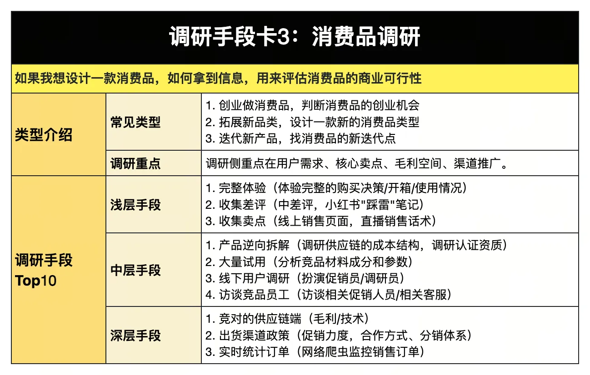
消费品市场
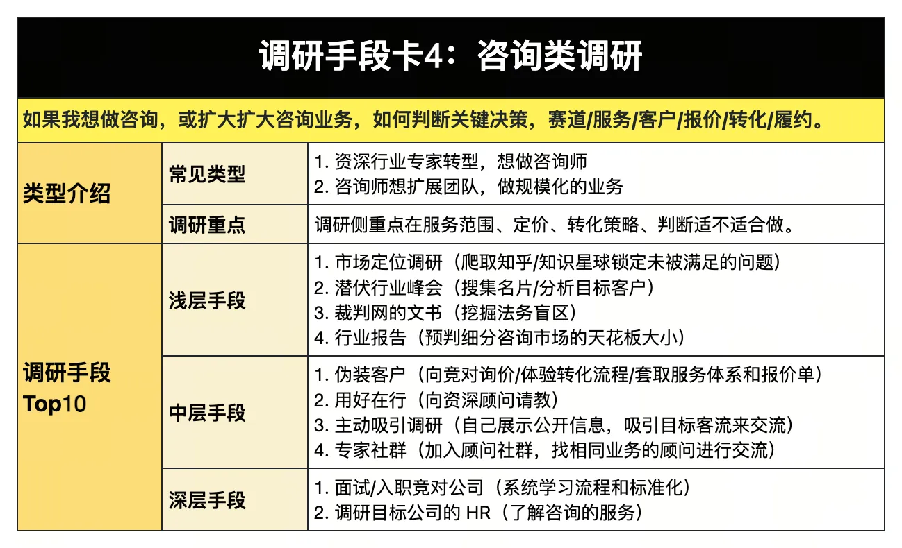
新闻资讯行业
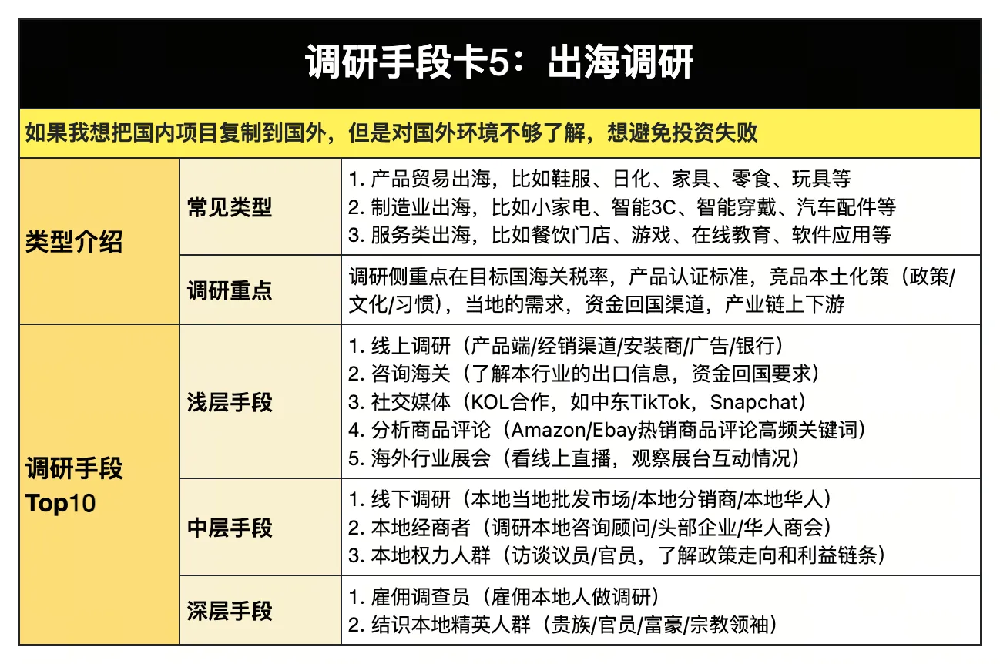
海外市场拓展
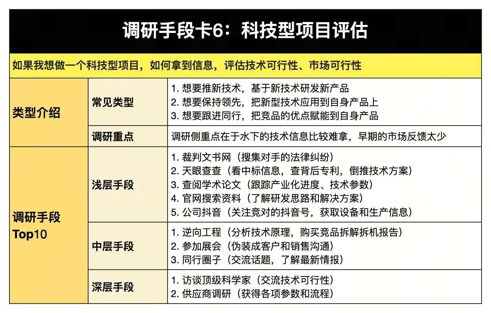
技术驱动型项目
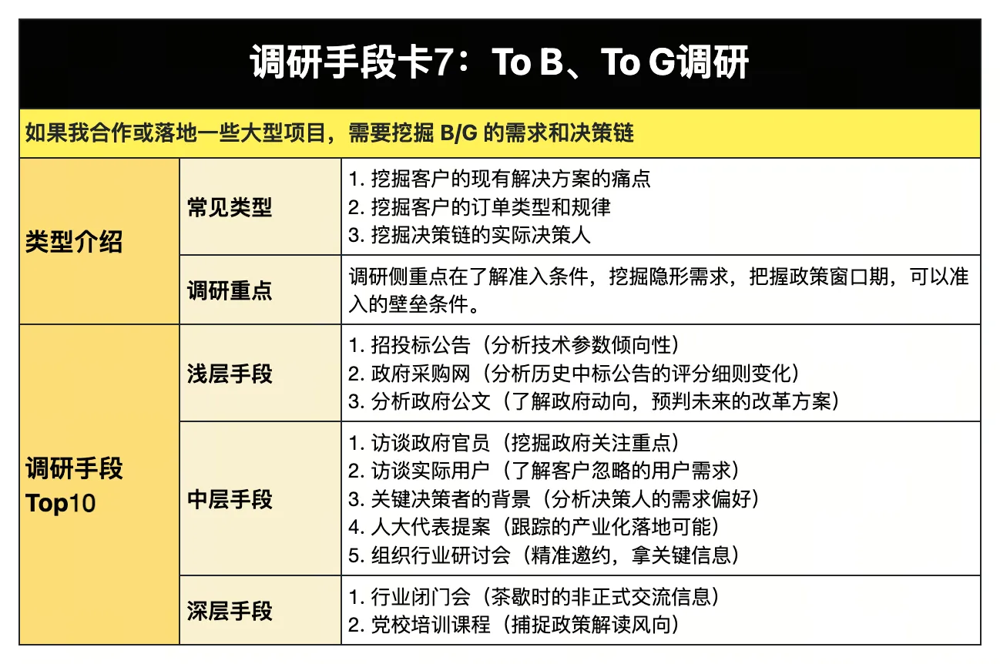
企业及政府客户
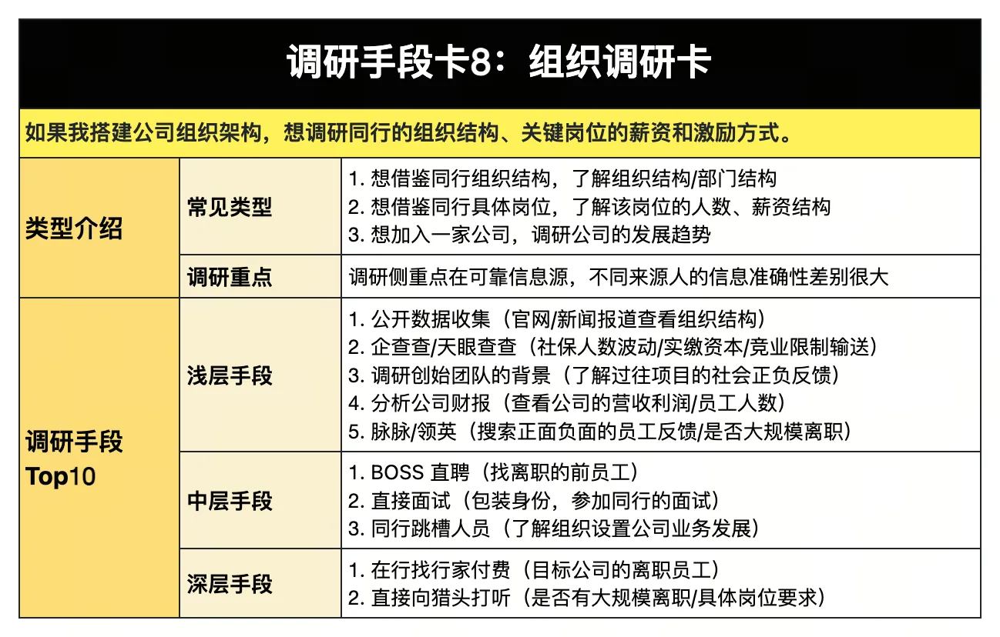
组织结构与运作机制
掌握调研的关键附着节点，构建你的超级武器库
识别调研过程中最关键的决策点和信息节点，提高调研效率。
系统整理的调研工具和方法集合，快速获取高质量信息。
建立你的调研雷达，掌握全景策略地图
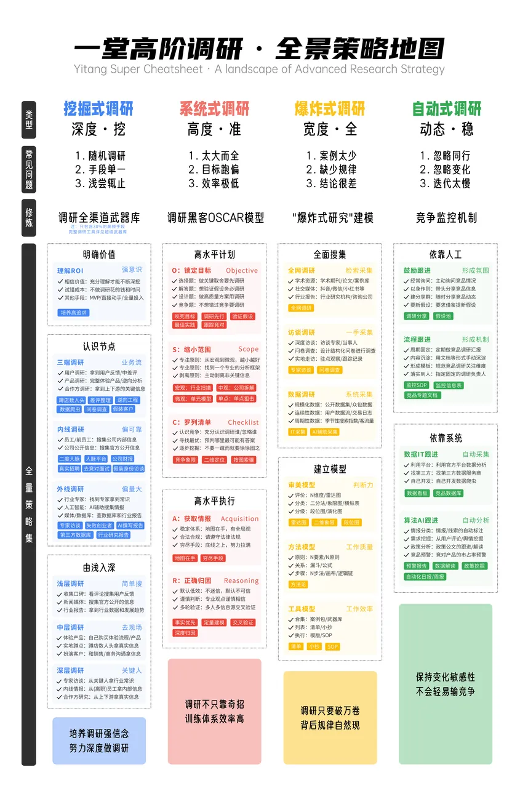
从宏观视角把握调研全貌，制定系统性调研策略。
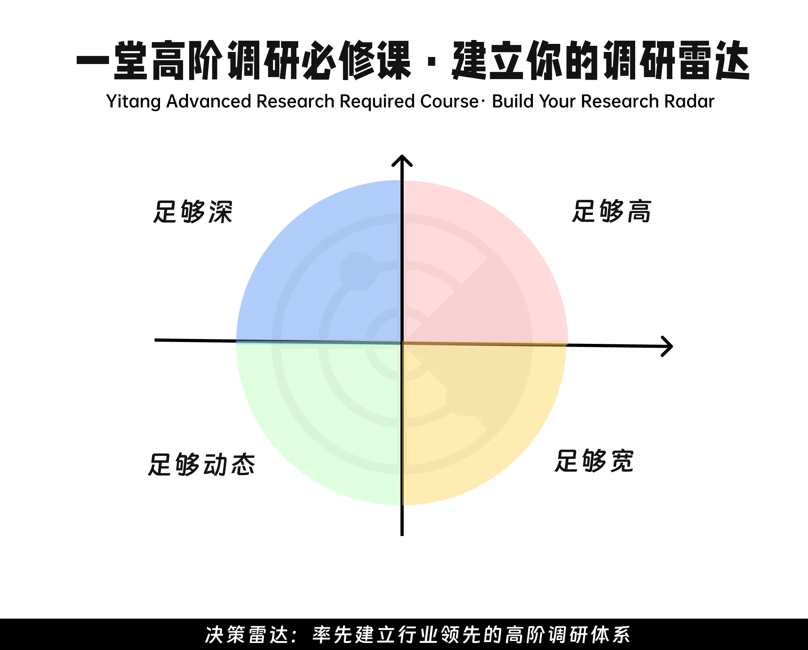
构建持续扫描市场动态的调研系统，保持信息敏感度。
提升AI调研能力的10条关键假设
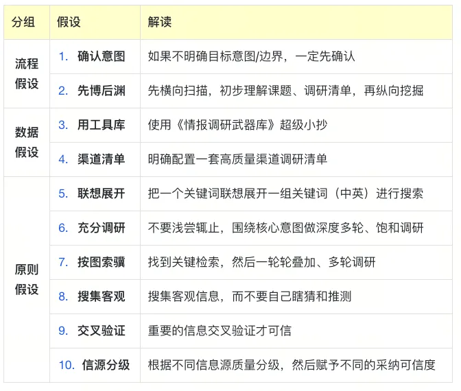
系统性梳理调研过程中的关键检查项

快速识别可能导致调研失败的致命问题
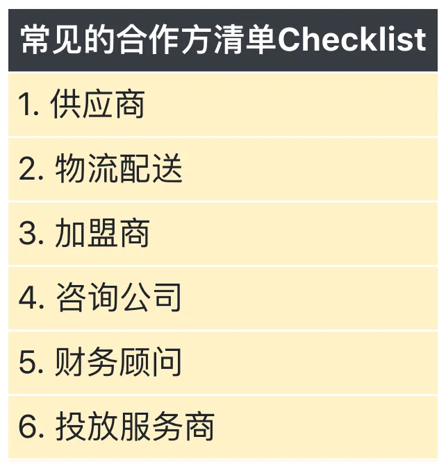
系统性梳理潜在合作伙伴类型
最实战的线下调研方法：蹲店、谈话、数人头
实地观察门店运营
与相关人员深度交流
量化分析人流量
系统性准备合作方访谈，获取关键信息
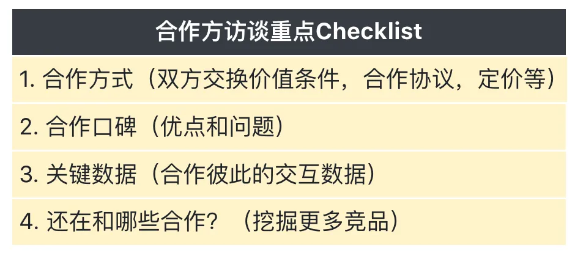
系统性准备合作方访谈的完整清单
系统性梳理潜在合作伙伴类型
真实案例拆解，学以致用
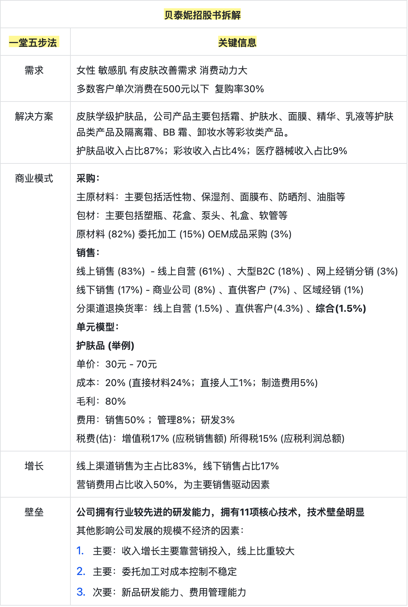
通过真实上市公司的招股书，系统学习如何进行行业研究和公司评估。
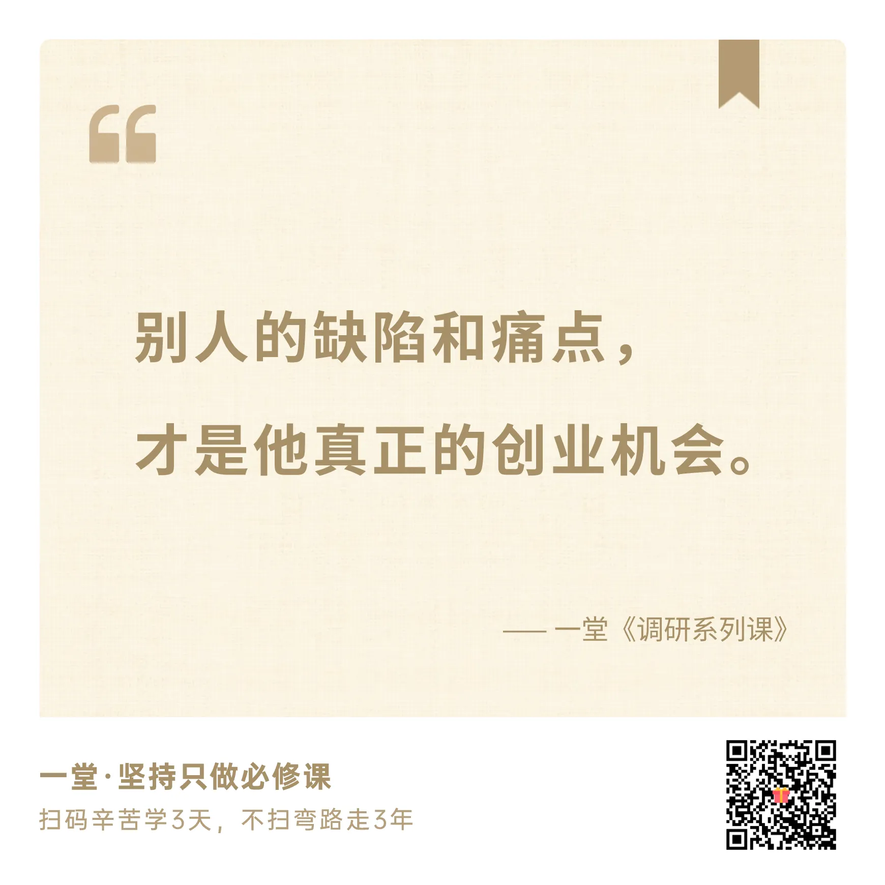